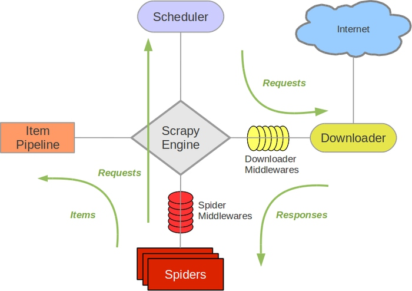

简述一下爬虫的步骤。
- 确定需求；
- 确定资源；
- 通过url获取网站的返回数据；
- 定位数据；
- 存储数据。
常见的HTTP方法有哪些？
GET：请求指定的页面信息，返回实体主体；
HEAD:类似于get请求，只不过返回的响应中没有具体的内容，用于捕获报头；
POST：向指定资源提交数据进行处理请求(比如表单提交或者上传文件)，。数据被包含在请求体中。
PUT:从客户端向服务端传送数据取代指定的文档的内容；
DELETE：请求删除指定的页面；
CONNNECT：HTTP1.1协议中预留给能够将连接方式改为管道方式的代理服务器；
OPTIONS:允许客户端查看服务器的性能；
TRACE：回显服务器的请求，主要用于测试或者诊断。
遇到的反爬虫策略以及解决方法。
- 通过headers反爬虫：自定义headers，添加网页中的headers数据。
- 基于用户行为的反爬虫(封IP)：可以使用多个代理IP爬取或者将爬取的频率降低。
- 动态网页反爬虫(JS或者Ajax请求数据)：动态网页可以使用 selenium + phantomjs 抓取。
- 字体加密反爬虫：浏览器调试模式找到woff字体文件。
Scrapy
框架流程

Scrapy的整个数据处理流程有Scrapy引擎进行控制，其主要的运行方式为：
{kind=link}
- 引擎打开一个域名时，爬行器(spider)处理这个域名。并且让爬行器获取第一个需要爬取的url，也就是初始请求。
- Engine获得从爬行器(spider)中爬行的初始请求。
- Engine在调度程序中调度请求，并请求下一次抓取请求。
- 调度程序将下一个请求返回到引擎。
- 引擎将请求发送到下载器，通过下载器中间件
- 页面下载完成后，下载器生成一个响应(带有该页面)并将其发送给引擎，通过下载器中间件
- 引擎从下载加载程序接收响应，并将其发送给Spider进行处理，并通过Spider中间件
- Spider处理响应，并向引擎返回报废的项和新请求(要跟踪的)，通过Spider中间件
- 引擎将已处理的项目发送到项目管道，然后将已处理的请求发送到调度程序，并请求可能的下一个请求进行抓取。
- 这个过程重复(从第1步)，直到调度程序不再发出请求。
Scrapy是以广度优先还是深度优先进行爬取的呢？
默认 深度优先顺序 。
如果您想以 广度优先顺序 进行爬取，你可以设置以下的设定:
python
1 | DEPTH_PRIORITY = 1 |